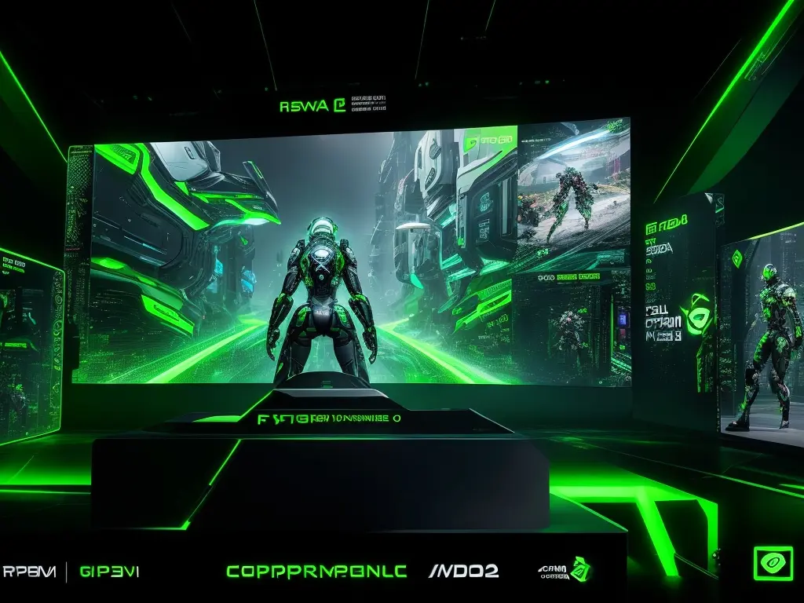

How AI can shape personalization, NPC behavior, content generation and future player experiences.

View full imageWhy AI matters for games
Artificial intelligence has the potential to transform how games respond to players. It can support smarter enemies, adaptive difficulty, procedural content, personalized recommendations and more dynamic worlds.
But the value of AI is not only technical. It depends on how it affects the player experience.
Adaptive worlds
AI can help worlds feel more alive by responding to player behavior. NPCs can react with more nuance, environments can change dynamically and systems can create experiences that feel less scripted.
The challenge is making these reactions feel coherent rather than random.
Personalization
AI can personalize challenge, content, onboarding and feedback. This can help players with different skill levels, preferences and motivations find a more satisfying experience.
Personalization should support agency. Players still need to feel that their choices matter.
Content generation
Generative systems can help create quests, dialogue, environments or variations at scale. This opens new possibilities but also raises questions about quality, consistency and authorship.
Good UX can help shape how generated content is presented, filtered and integrated into the game world.
UX as the bridge
AI in games needs interfaces, feedback and constraints that players can understand. If players do not trust the system, the technology can become frustrating.
The best AI experiences will be those that improve immersion, clarity and emotional engagement.
takeaway